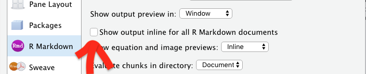

Chapter 9 Introduction to DBMS queries (11)
These packages are used in this chapter:
library(tidyverse)
library(DBI)
library(RPostgres)
library(dbplyr)
require(knitr)
library(bookdown)
library(sqlpetr)Assume that the Docker container with PostgreSQL and the dvdrental database are ready to go.
Connect to the database:
con <- sp_get_postgres_connection(user = Sys.getenv("DEFAULT_POSTGRES_USER_NAME"),
password = Sys.getenv("DEFAULT_POSTGRES_PASSWORD"),
dbname = "dvdrental",
seconds_to_test = 10)9.1 Downloading the data from the database
As we show later on, the database serves as a store of data and as an engine for sub-setting, joining, and doing computation. We begin with simple extraction, or “downloading” data.
9.1.1 Finding out what’s there
We’ve already seen the simplest way of getting a list of tables in a database with DBI functions that list tables and fields. Here are the (public) tables in the database:
## [1] "actor_info" "customer_list"
## [3] "film_list" "nicer_but_slower_film_list"
## [5] "sales_by_film_category" "staff"
## [7] "sales_by_store" "staff_list"
## [9] "category" "film_category"
## [11] "country" "actor"
## [13] "language" "inventory"
## [15] "payment" "rental"
## [17] "city" "store"
## [19] "film" "address"
## [21] "film_actor" "customer"Here are the fields (or columns or variables) in one specific table:
## [1] "rental_id" "rental_date" "inventory_id" "customer_id"
## [5] "return_date" "staff_id" "last_update"Later on we’ll discuss how to get more extensive data about each table and column from the database’s own store of metadata.
9.1.2 Downloading an entire table
There are many different methods of getting data from a DBMS, and we’ll explore the different ways of controlling each one of them.
DBI::dbReadTable will download an entire table into an R tibble.
## 'data.frame': 16044 obs. of 7 variables:
## $ rental_id : int 2 3 4 5 6 7 8 9 10 11 ...
## $ rental_date : POSIXct, format: "2005-05-24 22:54:33" "2005-05-24 23:03:39" ...
## $ inventory_id: int 1525 1711 2452 2079 2792 3995 2346 2580 1824 4443 ...
## $ customer_id : int 459 408 333 222 549 269 239 126 399 142 ...
## $ return_date : POSIXct, format: "2005-05-28 19:40:33" "2005-06-01 22:12:39" ...
## $ staff_id : int 1 1 2 1 1 2 2 1 2 2 ...
## $ last_update : POSIXct, format: "2006-02-16 02:30:53" "2006-02-16 02:30:53" ...That’s very simple, but if the table is large it may not be a good idea, since R is designed to keep the entire table in memory.
9.1.3 A reusable table reference
The dplyr::tbl function gives us more control over access to a table. It creates a connection object that might look like a data frame but it’s actually an list object that dplyr uses for constructing queries and retrieving data from the DBMS.
9.1.4 Lazy loading and connection objects
Consider the structure of the connection object:
## List of 2
## $ src:List of 2
## ..$ con :Formal class 'PqConnection' [package "RPostgres"] with 3 slots
## .. .. ..@ ptr :<externalptr>
## .. .. ..@ bigint : chr "integer64"
## .. .. ..@ typnames:'data.frame': 437 obs. of 2 variables:
## .. .. .. ..$ oid : int [1:437] 16 17 18 19 20 21 22 23 24 25 ...
## .. .. .. ..$ typname: chr [1:437] "bool" "bytea" "char" "name" ...
## ..$ disco: NULL
## ..- attr(*, "class")= chr [1:3] "src_dbi" "src_sql" "src"
## $ ops:List of 2
## ..$ x : 'ident' chr "rental"
## ..$ vars: chr [1:7] "rental_id" "rental_date" "inventory_id" "customer_id" ...
## ..- attr(*, "class")= chr [1:3] "op_base_remote" "op_base" "op"
## - attr(*, "class")= chr [1:4] "tbl_dbi" "tbl_sql" "tbl_lazy" "tbl"Notice that the first list contains the source connection information. Among other things it contains a list of variables in the table:
## [1] "rental_id" "rental_date" "inventory_id" "customer_id"
## [5] "return_date" "staff_id" "last_update"Because of lazy loading, R has not retrieved any actual data from the DBMS when you reference the rental_table object with str. Because R is lazy and smart, it retrieves data as late as possible and only retrieves a certain number of rows. This is a key paradigm shift for those new to working databases using R and dplyr.
We can trigger data retrieval in several ways. The head function, for example, triggers a query and prints its results. And R assumes a print function when it finds an object’s name on the command line. By default, these two functions print a different number of rows: head defaults to 6 rows and an implied print defaults to 10.
## # Source: lazy query [?? x 7]
## # Database: postgres [postgres@localhost:5432/dvdrental]
## rental_id rental_date inventory_id customer_id
## <int> <dttm> <int> <int>
## 1 2 2005-05-24 22:54:33 1525 459
## 2 3 2005-05-24 23:03:39 1711 408
## 3 4 2005-05-24 23:04:41 2452 333
## 4 5 2005-05-24 23:05:21 2079 222
## 5 6 2005-05-24 23:08:07 2792 549
## 6 7 2005-05-24 23:11:53 3995 269
## # ... with 3 more variables: return_date <dttm>, staff_id <int>,
## # last_update <dttm>## # Source: table<rental> [?? x 7]
## # Database: postgres [postgres@localhost:5432/dvdrental]
## rental_id rental_date inventory_id customer_id
## <int> <dttm> <int> <int>
## 1 2 2005-05-24 22:54:33 1525 459
## 2 3 2005-05-24 23:03:39 1711 408
## 3 4 2005-05-24 23:04:41 2452 333
## 4 5 2005-05-24 23:05:21 2079 222
## 5 6 2005-05-24 23:08:07 2792 549
## 6 7 2005-05-24 23:11:53 3995 269
## 7 8 2005-05-24 23:31:46 2346 239
## 8 9 2005-05-25 00:00:40 2580 126
## 9 10 2005-05-25 00:02:21 1824 399
## 10 11 2005-05-25 00:09:02 4443 142
## # ... with more rows, and 3 more variables: return_date <dttm>,
## # staff_id <int>, last_update <dttm>Notice that an Rstudio option can radically change the behavior of a connection object. If you happen to have set option to “Show output inline for all R Markdown documents,” printing a connection object (whether intentionally or not) will cause R to download an entire table. That can be a problem! For safety we recommend not having that option turned on when you might inadvertently download thousands of rows.

In the code block below, we see that nrows is like str in that it does not trigger a query to the dbms: it just returns NA. See Controlling number of rows returned for how to tell R to quit being lazy, get to work, and return all the rows.
## [1] NA9.1.5 Sub-setting variables
A table in the dbms may not only have many more rows than you want and also many more columns. The select command controls which columns are retrieved.
## # Source: lazy query [?? x 2]
## # Database: postgres [postgres@localhost:5432/dvdrental]
## rental_date return_date
## <dttm> <dttm>
## 1 2005-05-24 22:54:33 2005-05-28 19:40:33
## 2 2005-05-24 23:03:39 2005-06-01 22:12:39
## 3 2005-05-24 23:04:41 2005-06-03 01:43:41
## 4 2005-05-24 23:05:21 2005-06-02 04:33:21
## 5 2005-05-24 23:08:07 2005-05-27 01:32:07
## 6 2005-05-24 23:11:53 2005-05-29 20:34:53We won’t discuss dplyr methods for sub-setting variables, deriving new ones, or sub-setting rows based on the values found in the table because they are covered well in other places, including:
- Comprehensive reference: https://dplyr.tidyverse.org/
- Good tutorial: https://suzan.rbind.io/tags/dplyr/
In practice we find tht, renaming variables is often quite important because the names in an SQL database might not meet your needs as an analyst. In “the wild” you will find names that are ambiguous or overly specified, with spaces in them, and other problems that will make them difficult to use in R. It is good practice to do whatever renaming you are going to do in a predictablel place like at the top of your code. The names in the dvdrental database are simple and clear, but if they were not, you might rename them for subsequent use in this way:
renamed_rental_table <- dplyr::tbl(con, "rental") %>%
rename(rental_id_number = rental_id, inventory_id_number = inventory_id)
renamed_rental_table %>%
select(rental_id_number, rental_date, inventory_id_number) %>%
head()## # Source: lazy query [?? x 3]
## # Database: postgres [postgres@localhost:5432/dvdrental]
## rental_id_number rental_date inventory_id_number
## <int> <dttm> <int>
## 1 2 2005-05-24 22:54:33 1525
## 2 3 2005-05-24 23:03:39 1711
## 3 4 2005-05-24 23:04:41 2452
## 4 5 2005-05-24 23:05:21 2079
## 5 6 2005-05-24 23:08:07 2792
## 6 7 2005-05-24 23:11:53 39959.1.6 Controlling number of rows returned
The collect function triggers the creation of a tibble and controls the number of rows that the DBMS sends to R.
## # A tibble: 3 x 7
## rental_id rental_date inventory_id customer_id
## <int> <dttm> <int> <int>
## 1 2 2005-05-24 22:54:33 1525 459
## 2 3 2005-05-24 23:03:39 1711 408
## 3 4 2005-05-24 23:04:41 2452 333
## # ... with 3 more variables: return_date <dttm>, staff_id <int>,
## # last_update <dttm>In this case the collect function triggers the execution of a query that counts the number of records in the table by staff_id:
## # A tibble: 2 x 2
## staff_id n
## <int> <S3: integer64>
## 1 2 8004
## 2 1 8040The collect function affects how much is downloaded, not how many rows the DBMS needs to process the query. This query processes all of the rows in the table but only displays one row of output.
## # A tibble: 1 x 2
## staff_id n
## <int> <S3: integer64>
## 1 2 80049.1.7 Random rows from the dbms
When the dbms contains many rows, a sample of the data may be plenty for your purposes. Although dplyr has nice functions to sample a data frame that’s already in R (e.g., the sample_n and sample_frac functions), to get a sample from the dbms we have to use dbGetQuery to send native SQL to the database. To peak ahead, here is one example of a query that retrieves 20 rows from a 1% sample:
one_percent_sample <- DBI::dbGetQuery(con,
"SELECT rental_id, rental_date, inventory_id, customer_id FROM rental TABLESAMPLE SYSTEM(1) LIMIT 20;
")
one_percent_sample## rental_id rental_date inventory_id customer_id
## 1 4498 2005-07-08 02:07:50 4299 43
## 2 4499 2005-07-08 02:08:48 851 199
## 3 4500 2005-07-08 02:10:01 398 462
## 4 4501 2005-07-08 02:12:00 1412 262
## 5 4502 2005-07-08 02:12:04 225 470
## 6 4503 2005-07-08 02:17:12 1503 8
## 7 4504 2005-07-08 02:19:27 361 422
## 8 4505 2005-07-08 02:20:04 1864 481
## 9 4506 2005-07-08 02:22:18 1484 133
## 10 4507 2005-07-08 02:22:45 819 505
## 11 4508 2005-07-08 02:28:41 3996 97
## 12 4509 2005-07-08 02:32:38 1760 230
## 13 4510 2005-07-08 02:34:51 1085 27
## 14 4511 2005-07-08 02:36:21 4438 75
## 15 4512 2005-07-08 02:38:56 1569 424
## 16 4513 2005-07-08 02:39:59 3704 182
## 17 4514 2005-07-08 02:41:25 1938 576
## 18 4515 2005-07-08 02:42:03 1998 229
## 19 4516 2005-07-08 02:43:41 2314 497
## 20 4517 2005-07-08 02:45:19 453 169.1.8 Examining dplyr’s SQL query and re-using SQL code
The show_query function shows how dplyr is translating your query to the dialect of the target dbms:
## <SQL>
## SELECT "staff_id", COUNT(*) AS "n"
## FROM "rental"
## GROUP BY "staff_id"Here is an extensive discussion of how dplyr code is translated into SQL:
The SQL code can submit the same query directly to the DBMS with the DBI::dbGetQuery function:
## staff_id n
## 1 2 8004
## 2 1 8040<<smy We haven’t investigated this, but it looks like dplyr collect() function triggers a call simmilar to the dbGetQuery call above. The default dplyr behavior looks like dbSendQuery() and dbFetch() model is used.>>
When you create a report to run repeatedly, you might want to put that query into R markdown. That way you can also execute that SQL code in a chunk with the following header:
{sql, connection=con, output.var = "miscellaneous_rental_query"}
Rmarkdown stored that query result in a tibble:
## staff_id n
## 1 2 8004
## 2 1 80409.2 Investigating a single table with R
Dealing with a large, complex database highlights the utility of specific tools in R. We include brief examples that we find to be handy:
- Base R structure:
str - printing out some of the data:
datatable,kable, andView - summary statistics:
summary glimpseoin thetibblepackage, which is included in thetidyverseskimin theskimrpackage
9.2.1 str - a base package workhorse
str is a workhorse function that lists variables, their type and a sample of the first few variable values.
## 'data.frame': 16044 obs. of 7 variables:
## $ rental_id : int 2 3 4 5 6 7 8 9 10 11 ...
## $ rental_date : POSIXct, format: "2005-05-24 22:54:33" "2005-05-24 23:03:39" ...
## $ inventory_id: int 1525 1711 2452 2079 2792 3995 2346 2580 1824 4443 ...
## $ customer_id : int 459 408 333 222 549 269 239 126 399 142 ...
## $ return_date : POSIXct, format: "2005-05-28 19:40:33" "2005-06-01 22:12:39" ...
## $ staff_id : int 1 1 2 1 1 2 2 1 2 2 ...
## $ last_update : POSIXct, format: "2006-02-16 02:30:53" "2006-02-16 02:30:53" ...9.2.2 Always just look at your data with head, View, or kable
There is no substitute for looking at your data and R provides several ways to just browse it. The head function controls the number of rows that are displayed. Note that tail does not work against a database object. In every-day practice you would look at more than the default 6 rows, but here we wrap head around the data frame:
9.2.3 The summary function in base
The basic statistics that the base package summary provides can serve a unique diagnostic purpose in this context. For example, the following output shows that rental_id is a sequential number from 1 to 16,049 with no gaps. The same is true of inventory_id. The number of NA’s is a good first guess as to the number of dvd’s rented out or lost on 2005-09-02 02:35:22.
## rental_id rental_date inventory_id
## Min. : 1 Min. :2005-05-24 22:53:30 Min. : 1
## 1st Qu.: 4014 1st Qu.:2005-07-07 00:58:40 1st Qu.:1154
## Median : 8026 Median :2005-07-28 16:04:32 Median :2291
## Mean : 8025 Mean :2005-07-23 08:13:34 Mean :2292
## 3rd Qu.:12037 3rd Qu.:2005-08-17 21:16:23 3rd Qu.:3433
## Max. :16049 Max. :2006-02-14 15:16:03 Max. :4581
##
## customer_id return_date staff_id
## Min. : 1.0 Min. :2005-05-25 23:55:21 Min. :1.000
## 1st Qu.:148.0 1st Qu.:2005-07-10 15:49:36 1st Qu.:1.000
## Median :296.0 Median :2005-08-01 19:45:29 Median :1.000
## Mean :297.1 Mean :2005-07-25 23:58:03 Mean :1.499
## 3rd Qu.:446.0 3rd Qu.:2005-08-20 23:35:55 3rd Qu.:2.000
## Max. :599.0 Max. :2005-09-02 02:35:22 Max. :2.000
## NA's :183
## last_update
## Min. :2006-02-15 21:30:53
## 1st Qu.:2006-02-16 02:30:53
## Median :2006-02-16 02:30:53
## Mean :2006-02-16 02:31:31
## 3rd Qu.:2006-02-16 02:30:53
## Max. :2006-02-23 09:12:08
## 9.2.4 The glimpse function in the tibble package
The tibble package’s glimpse function is a more compact version of str:
## Observations: 16,044
## Variables: 7
## $ rental_id <int> 2, 3, 4, 5, 6, 7, 8, 9, 10, 11, 12, 13, 14, 15, 1...
## $ rental_date <dttm> 2005-05-24 22:54:33, 2005-05-24 23:03:39, 2005-0...
## $ inventory_id <int> 1525, 1711, 2452, 2079, 2792, 3995, 2346, 2580, 1...
## $ customer_id <int> 459, 408, 333, 222, 549, 269, 239, 126, 399, 142,...
## $ return_date <dttm> 2005-05-28 19:40:33, 2005-06-01 22:12:39, 2005-0...
## $ staff_id <int> 1, 1, 2, 1, 1, 2, 2, 1, 2, 2, 2, 1, 1, 1, 2, 1, 2...
## $ last_update <dttm> 2006-02-16 02:30:53, 2006-02-16 02:30:53, 2006-0...9.2.5 The skim function in the skmir package
The skimr package has several functions that make it easy to examine an unknown data frame and assess what it contains. It is also extensible.
##
## Attaching package: 'skimr'## The following object is masked from 'package:knitr':
##
## kable## Skim summary statistics
## n obs: 16044
## n variables: 7
##
## ── Variable type:integer ──────────────────────────────────────────────────────────────────────────────
## variable missing complete n mean sd p0 p25 p50
## customer_id 0 16044 16044 297.14 172.45 1 148 296
## inventory_id 0 16044 16044 2291.84 1322.21 1 1154 2291
## rental_id 0 16044 16044 8025.37 4632.78 1 4013.75 8025.5
## staff_id 0 16044 16044 1.5 0.5 1 1 1
## p75 p100 hist
## 446 599 ▇▇▇▇▇▇▇▇
## 3433 4581 ▇▇▇▇▇▇▇▇
## 12037.25 16049 ▇▇▇▇▇▇▇▇
## 2 2 ▇▁▁▁▁▁▁▇
##
## ── Variable type:POSIXct ──────────────────────────────────────────────────────────────────────────────
## variable missing complete n min max median
## last_update 0 16044 16044 2006-02-15 2006-02-23 2006-02-16
## rental_date 0 16044 16044 2005-05-24 2006-02-14 2005-07-28
## return_date 183 15861 16044 2005-05-25 2005-09-02 2005-08-01
## n_unique
## 3
## 15815
## 158369.3 Dividing the work between R on your machine and the DBMS
They work together.
9.3.1 Make the server do as much work as you can
- show_query as a first draft of SQL. May or may not use SQL code submitted directly.
9.3.2 Criteria for choosing between dplyr and native SQL
This probably belongs later in the book.
- performance considerations: first get the right data, then worry about performance
- Trade offs between leaving the data in PostgreSQL vs what’s kept in R:
- browsing the data
- larger samples and complete tables
- using what you know to write efficient queries that do most of the work on the server
9.3.3 dplyr tools
Where you place the collect function matters.
## [1] "sql-pet"9.4 Other resources
- Benjamin S. Baumer, A Grammar for Reproducible and Painless Extract-Transform-Load Operations on Medium Data: https://arxiv.org/pdf/1708.07073